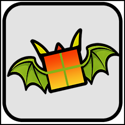
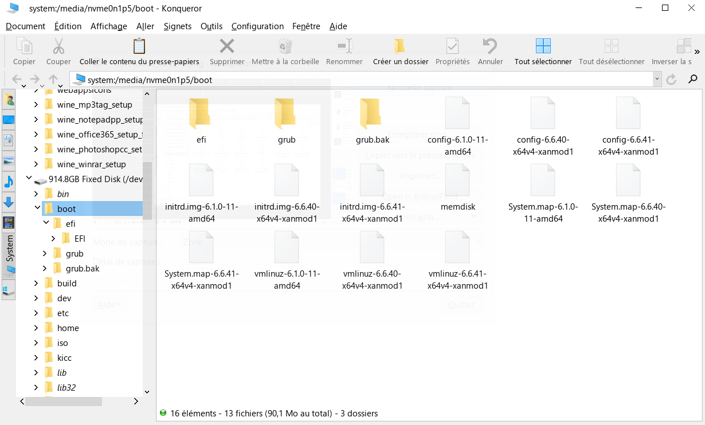
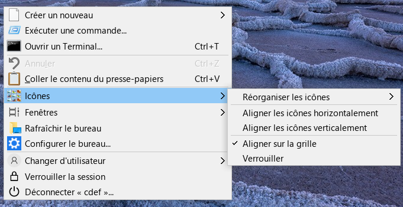
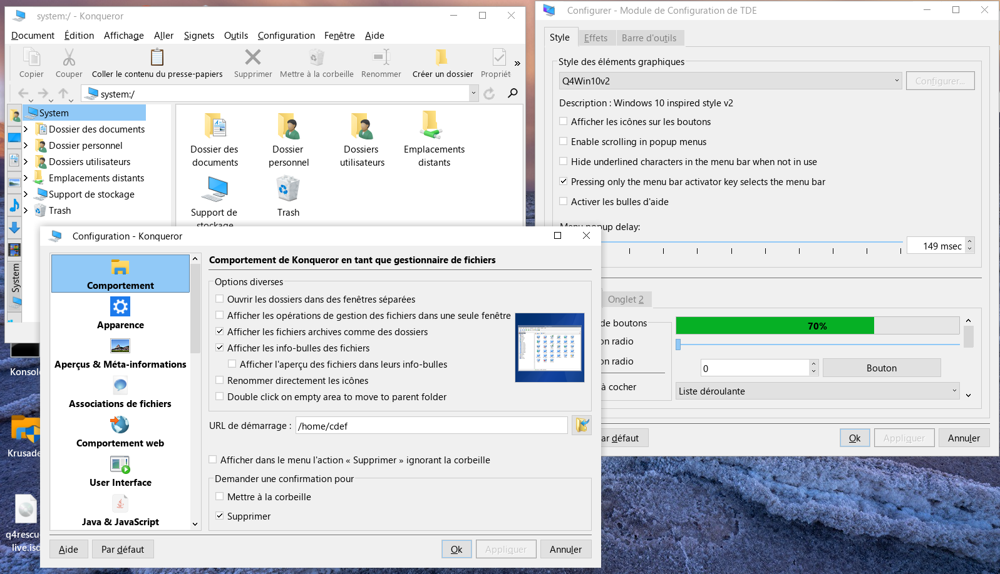
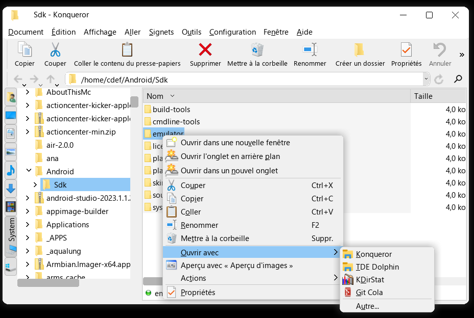
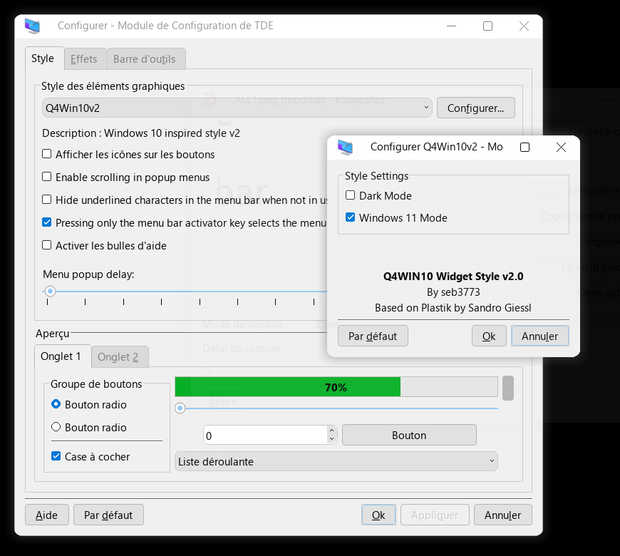

Lightweight, modern flat Windows 10 & 11 inspired widget style plugin for Trinity Desktop Environment (TDE / TQt3).
Add the official repository to your system to receive automatic updates alongside your system packages:
echo "deb [trusted=yes] https://seb3773.github.io/tdestyle-Q4WIN10/ stable main" | sudo tee /etc/apt/sources.list.d/tde-win-style-q4win10.list sudo apt update sudo apt install tde-win-style-q4win10
* Supports Debian (Bullseye, Bookworm, Trixie), Ubuntu (Jammy, Noble) and Q4OS running Trinity Desktop R14.1.x.
Prefer offline installation? Download pre-built standalone binaries directly:
Graphical one-click installer designed specifically for Q4OS Trinity desktop environment.
Download .qsiStandard standalone package for Trinity Desktop / Debian-based systems.
Download .deb_Q4WIN10_MENUBAR_HEIGHT) with static caching matching the window decoration.div255), zero RTTI in hot paths, zero heap caches: ~136 KB plugin, ~43 KB deb.



